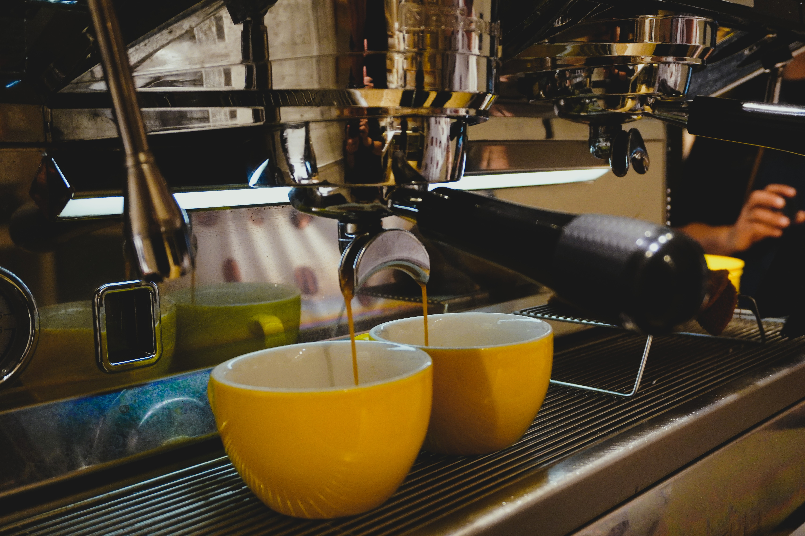

TENEMOS CAFÉ ESPECIAL
Apasionados por el café especial, somos una empresa que busca la excelencia en cada taza y compartir nuestro conocimiento para elevar los estandares de calidad.
UN CAFÉ ESPECIAL NO SURGE PORQUE SI...
Conocé lo que hacemos, con quiénes trabajamos y de dónde proviene nuestro café excepcional. Detrás de cada taza hay una historia de pasión, compromiso y respeto.
Tenemos varias obsesiones: la calidad, el respeto al producto, a quienes lo cultivan, la selección en origen y el trato directo. Cada paso del proceso refleja nuestra dedicación por mantener la esencia del café desde su origen hasta tu taza.
Y también nos mueve la educación, porque creemos que el conocimiento transforma. Aspiramos a que cada persona se motive a seguir explorando, aprendiendo y expandiendo la cultura del café.